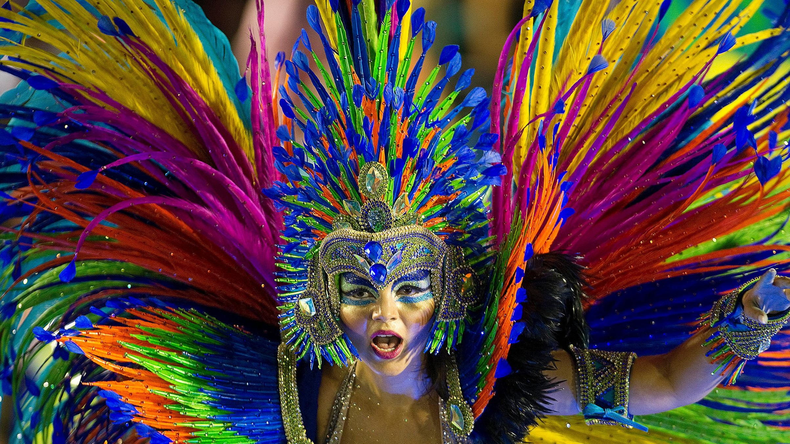

What is Carnival in Rio?
Carnival in Rio de Janeiro is one of the largest and most famous festivals in the world. Held every year before Lent, it is a massive celebration filled with elaborate parades, dazzling costumes, and vibrant music. Millions of people from all over the world travel to Brazil to experience its excitement. The festival is a fusion of African, Indigenous, and Portuguese cultural traditions that have evolved over the years, making it a unique global spectacle. The highlight of the festival is the Sambadrome parade, where competing samba schools showcase their dance performances, artistic creativity, and incredible floats, all synchronized to the rhythms of samba music.

Traditions of Carnival in Rio
Samba Parades & Samba Schools
The heart of Carnival is the Sambadrome Marquês de Sapucaí, a massive stadium built specifically for samba parades. Each year, samba schools from different neighborhoods in Rio de Janeiro compete in this spectacular event. These schools spend months preparing their performances, creating elaborate floats, choreographing dances, and designing intricate costumes to tell stories, often inspired by Brazilian history, folklore, or contemporary themes. The performers, called sambistas, dance to the rhythm of the samba, a genre of music that originated in Brazil, and create a visual feast of color, music, and movement. The parades are judged on several aspects, including musical composition, choreography, and visual appeal, with the winning samba school gaining prestigious recognition.

Street Parties (Blocos)
Apart from the official parades, the streets of Rio are filled with blocos—street parties that are an essential part of the Carnival experience. These open-air parties feature live music, dancing, and a carefree atmosphere that welcomes people of all ages and backgrounds. Anyone can join a bloco, and each has its unique theme, with some even incorporating costumes and dance moves. The blocos occur in various neighborhoods, with some of the largest gatherings taking place in areas like Santa Teresa, Lapa, and Copacabana. In addition to samba, these street parties feature a variety of music genres, from reggae and funk to traditional Brazilian rhythms, ensuring there is something for everyone to enjoy.
Costumes & Colors
Carnival is famous for its feathered headdresses, sequined outfits, and extravagant masks, all contributing to the festival's dazzling and larger-than-life atmosphere. The costumes worn during the samba parades are works of art in themselves, often weighing several pounds and incorporating a wide range of materials, such as feathers, beads, rhinestones, and glitter. The colors are bold and bright, with performers typically wearing vibrant combinations of gold, silver, red, green, blue, and purple. The extravagant outfits symbolize the joy, energy, and freedom of Carnival and are a reflection of the creativity and dedication of the samba schools. Masks are also worn by some participants, adding an element of mystery and mystique to the festivities.
Music & Dance
The rhythms of samba are what truly set Carnival apart. The samba enredo (the samba song performed during the parade) tells the story of the samba school’s theme and is the backbone of each performance. The music is lively, energetic, and contagious, with percussion instruments like drums, tamborins, and surdos creating a heartbeat that energizes everyone. During the blocos, you will hear a mix of samba and other Brazilian genres, such as bossa nova and funk carioca, blending traditional and contemporary sounds. Dance is also at the core of the celebration, with samba being the most prominent dance style. Its quick steps, rhythmic body movements, and fluid motions are a spectacle in themselves and a central part of the Carnival spirit.
Cultural Significance
Carnival in Rio is more than just a party; it is a cultural phenomenon that brings the community together in a celebration of Brazil's rich history, diversity, and traditions. It is a time to express creativity, embrace freedom, and connect with others in joyous celebration. Carnival has its roots in the African, Indigenous, and Portuguese influences that have shaped Brazil's identity, and over the years, it has become a symbol of unity and resilience. It is also a time for social commentary, as some samba schools use their performances to address current political and social issues, giving voice to important causes through art and music. For the people of Rio and the millions of visitors who attend, Carnival is an unforgettable experience that embodies the spirit of Brazil and its people.
Explore the Vibrant Rio Carnival
Get a glimpse of the excitement and history of Rio Carnival with these videos and links: